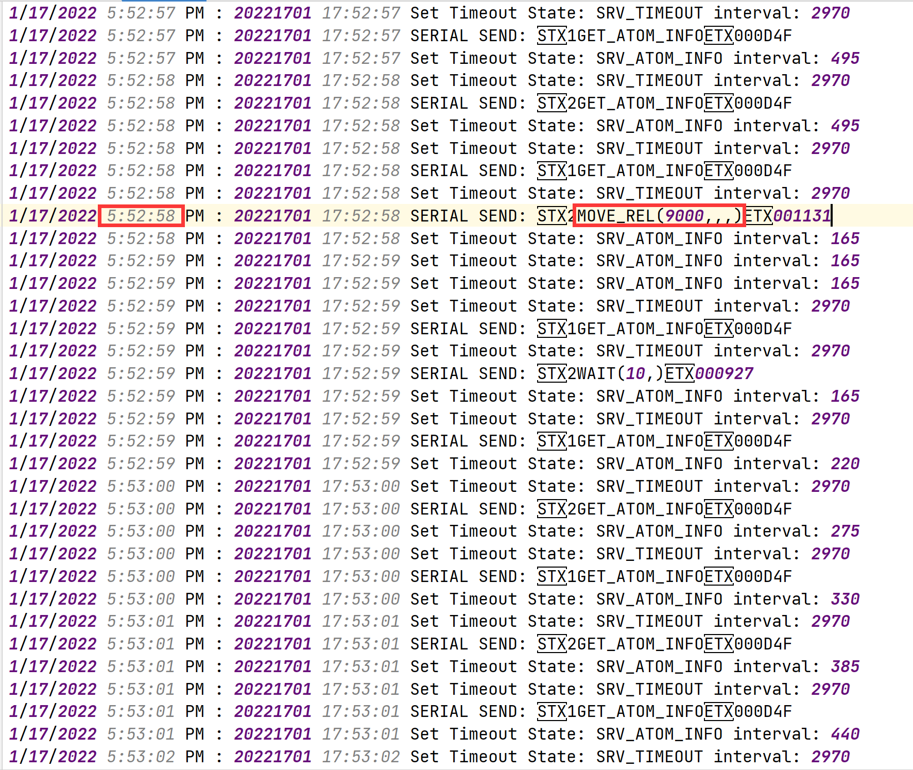

今天用python写一个简单的脚本来自动处理log日志文件。
需求： 对如下log日志文件中，需要提取出指定的日期中的指定操作的具体时间，其中操作是需要提取出移动操作(MOVE_REL以及MOVE_ABS)，移动分为三种，开始点，中间点，结束点。开始点和结束点不一定是一一对应的，需要用算法判断出最后的一个开始点以及其匹配到的结束点（对所有结束点如果前面存在有最近的开始点，并且在上一个结束点之后，那么此开始点和结束点就匹配为一对）然后将其中所有的中间点以及该开始点和结束点的操作时间写入到excel表格中。

思路： 引入xlwt库来将最终结果写入生成excel表格，用open()函数来取得fileObject对象，然后利用其readlines()函数来读取log文件所有的行，对readlines()的结果循环处理，利用str.find()函数通过一定的规则来匹配需要找的项，首先筛选出指定日期的行，在其中标出其所有的开始点，结束点以及中间点，然后对开始点和结束点进行匹配，匹配出所有的完整的开始点和结束点的集合。然后对每一组集合中的开始，中间以及结束点的操作时间（时分秒）写入到一张sheet中，最后将所有sheet保存到一个excel表格文件中。
代码： 1 2 3 4 5 6 7 8 9 10 11 12 13 14 15 16 17 18 19 20 21 22 23 24 25 26 27 28 29 30 31 32 33 34 35 36 37 38 39 40 41 42 43 44 45 46 47 48 49 50 51 52 53 54 55 56 57 58 59 60 61 62 63 64 65 66 67 68 69 70 71 72 73 74 75 76 77 78 79 80 81 82 83 84 85 86 87 88 89 90 91 92 93 94 95 import xlwtdef process_log (file_name, date_sign, start_sign, end_sign, opreate_sign, name ): fo = open (file_name,'r' ) array = fo.readlines() start = [] end = [] date_flag = 0 opreate_list = [] for line in range (len (array)): if (array[line].find(date_sign) >= 0 ): if (array[line].find(start_sign) >= 0 ): print ('开始点' ,array[line],'--' ,line) start.append(line) if (array[line].find(end_sign) >= 0 ): print ('结束点' , array[line],'--' ,line) end.append(line) if array[line].find(opreate_sign) >= 0 : opreate_list.append(line) result = [] reverse_start = start reverse_start.reverse() pre = 0 for i in range (len (end)): for j in range (len (reverse_start)): if reverse_start[j] > end[i]: continue if reverse_start[j] > pre: print ('匹配到对' ,reverse_start[j],'到' ,end[i]) temp = [reverse_start[j], end[i]] result.append(temp) break pre = end[i] if result.__len__() == 0 : print ('无匹配项' ) return workbook = xlwt.Workbook(encoding = 'utf-8' ) num = 1 for i in range (len (result)): sheet_name = 'sheet' +str (num) worksheet = workbook.add_sheet(sheet_name) num += 1 index = 0 for j in range (len (opreate_list)): if opreate_list[j] > result[i][0 ] and opreate_list[j] < result[i][1 ]: worksheet.write(index, 0 , array[opreate_list[j]][10 :17 ]) index += 1 workbook.save(name) return if __name__ == '__main__' : file_name = './cyc_comp.log' date_sign = "1/17/2022" start_sign = '103700,13100,100000' end_sign = "-10000,15000,80000" opreate_sign = 'MOVE_REL' name = 'move_time.xls' process_log(file_name=file_name, date_sign=date_sign, start_sign=start_sign, end_sign=end_sign, opreate_sign=opreate_sign, name=name)